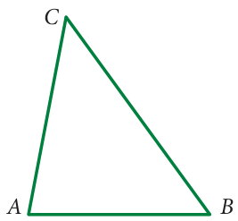
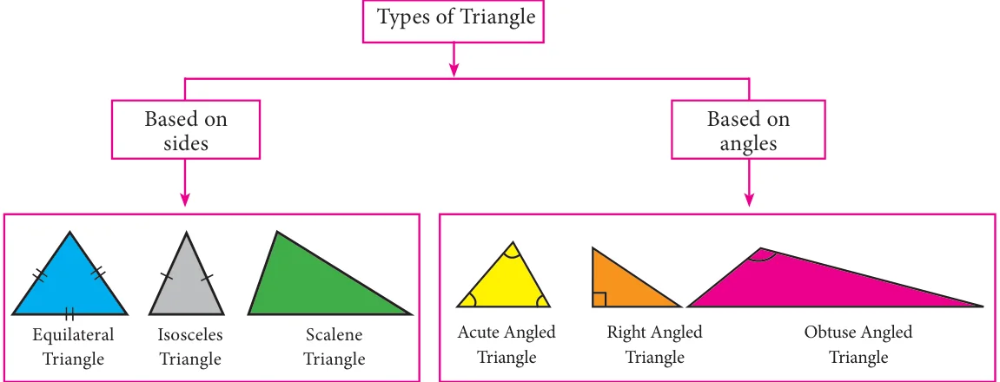
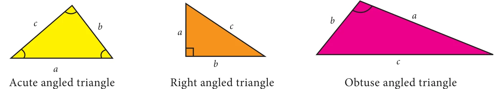

Chapter
GEOMETRY
4
Learning Objectives
- To apply angle sum property of triangles.
- To understand the concept of congruency of triangles.
- To know the criteria for congruence of triangles.
Recap
Triangles
In first term we studied about different types of angles made by intersecting lines and parallel lines with transversals. Further we learnt about triangles, types of triangles and properties of triangles. In this term we are going to apply the properties of triangles.

A triangle is a closed figure formed by three line segments. It has three vertices, three sides and three angles.
In the triangle \(ABC\) (Fig 4.1) vertices are \(A, B, C\), the sides are \(\overline{AB}\), \(\overline{BC}\), \(\overline{CA}\) and the angles are \(\angle CAB\), \(\angle ABC\), \(\angle BCA\). We have already learnt to classify triangles based on sides and angles.
The classification of triangles are shown below.

In any triangle drawn by joining three non-collinear points, the sum of the lengths of any two sides is greater than the length of the third side. This property is called as Triangle inequality.
To verify this property, let us consider three types of triangles based on angles.

For each of these triangles the following statements are true.
- \(a + b > c\)
- \(b + c > a\)
- \(c + a > b\)
This property is also true for three types of triangles based on sides.
Try these
Anwser the following questions.
- Triangle is formed by joining three \(\underline{\qquad\qquad}\) points.
- A triangle has \(\underline{\qquad\qquad}\) vertices and \(\underline{\qquad\qquad}\) sides.
- A point where two sides of a triangle meet is known as \(\underline{\qquad}\) of a triangle.
- Each angle of an equilateral triangle is of \(\underline{\qquad\qquad}\) measure.
- A triangle has angle measurements of \(29^{\circ}\), \(65^{\circ}\) and \(86^{\circ}\). Then it is \(\underline{\qquad}\) triangle.
- an acute angled
- a right angled
- an obtuse angled
- a scalene
- A triangle has angle measurements of \(30^{\circ}\), \(30^{\circ}\) and \(120^{\circ}\). Then it is \(\underline{\qquad}\) triangle.
- an acute angled
- scalene
- obtuse angled
- right angled
- Which of the following can be the sides of a triangle?
- 5, 9, 14
- 7, 7, 15
- 1, 2, 4
- 3, 6, 8
- Ezhil wants to fence his triangular garden. If two of the sides measure 8 feet and 14 feet then the length of the third side is \(\underline{\qquad\qquad}\)
- 11 ft
- 6 ft
- 5 ft
- 22 ft
- Can we have more than one right angle in a triangle?
- How many obtuse angles are possible in a triangle?
- In a right triangle, what will be the sum of other two angles?
- Is it possible to form an isosceles right angled triangle? Explain.